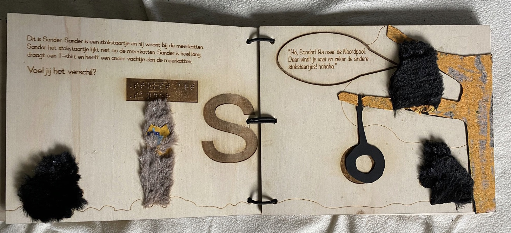

Houten speelboek voor slechtziende kinderen gemaakt tijdens het passieproject.
Tools:
- Illustrator
- Makerslab: Lasersnijder
- Verschillende stoffen
Design Challenge
Hoe kunnen we een fysiek product ontwerpen, met overeenkomende passies van de teamleden, dat de wereld een stuk beter zou maken?
Video
Samenvatting
Het Passieproject' bracht leerlingen samen op basis van hun individuele passies, die ze vooraf hadden gedeeld via enquêtes. De uitdaging bestond erin dat ons groepje, met gedeelde interesses, een product moest creëren, zowel fysiek als digitaal, met als doel een positieve impact te hebben op de wereld. Het groepje waar ik ingedeeld was, deelde een gezamenlijke passie voor lezen, schrijven en creativiteit. Al snel beseften we dat onze gedeelde passies ons in staat stelden om de wereld inclusiever te maken. Ons project omvatte de ontwikkeling van een interactief kinderboek dat niet alleen lezen en verhalen vertellen omvatte, maar ook als een speelboek fungeerde. Het bijzondere aan dit boek was dat het speciaal was ontworpen om slechtziende kinderen in staat te stellen volledig deel te nemen en te genieten van het verhaal. Zo werd 'Het Passieproject' een inspirerende reis van creativiteit en inclusie.
Mijn rol
Dit project was een samenwerkingsopdracht, waarbij we elk onze passies inzetten. Mijn specifieke rol was gericht op het schrijven. Ik heb het verhaal geschreven voor ons kinderboek. Om deze taak goed te vervullen, heb ik voorbereidingen getroffen, waaronder deelname aan een schrijfworkshop bij MaQam en een storytelling workshop op school. Deze workshops hielpen me om mijn schrijfvaardigheden te verbeteren en een boeiend verhaal te creëren. Daarnaast voerde ik deskresearch uit om inzicht te krijgen in hoe andere kinderboeken zijn geschreven, zodat we een kwalitatief hoogstaand boek konden produceren. Tijdens het ontwerpproces heb ik me ook beziggehouden met het ontwerpen van de spreads voor het boek, omdat mijn teamgenoot verantwoordelijk was voor de daadwerkelijke productie in het makerslab. De spreads werden uiteindelijk bewerkt met een houtlaser, waarbij de tekst in hout werd gegraveerd, wat een unieke en voelbare textuur aan de pagina's gaf. Daarnaast werkte ik aan een deel van onze merchandise, waaronder de boekenleggers en de poster, als aanvulling op ons project. Deze items werden tentoongesteld tijdens onze eindexpositie om ons werk te presenteren. De duur van het project besloeg in totaal drie weken, waarin we nauw samenwerkten om ons gezamenlijke doel te bereiken.
Goals
Ons project heeft als voornaamste doelstelling de bevordering van inclusie. We hebben dit bereikt door een interactief kinderboek te creëren, speciaal ontworpen om slechtziende kinderen een toegankelijke en boeiende leeservaring te bieden. Dit heeft niet alleen bijgedragen aan een gelijke deelname aan literatuur en verhalen, ongeacht visuele beperkingen, maar het heeft ook de bredere samenleving bewust gemaakt van het belang van inclusie.
Het ontwerpproces

Dit project bood ons de unieke kans om ons buiten onze comfortzone van digitale producten te begeven en een fysiek product te creëren. Hoewel de aard van het project verschilde van onze gebruikelijke digitale ontwerpprocessen, was het ontwerptraject verrassend vergelijkbaar. We pasten een lo-fi, me-fi, hi-fi strategie toe, waarbij we begonnen met ruwe schetsen en ideeën, deze vervolgens verfijnden en uiteindelijk tot een hoogwaardig ontwerp brachten. Ook maakten we gebruik van het welbekende Double-Diamond proces, zoals je kunt zien op de afbeelding.
Een van de uitdagingen waarmee we werden geconfronteerd, was het experimenteren met hout om het buigzaam te maken, zodat we de gewenste vormen en texturen konden creëren. We kregen van school een budget toegewezen voor gebruik in het makerslab, wat betekende dat we verstandig moesten omgaan met onze middelen. Dit vereiste een zorgvuldige planning en het maken van weloverwogen keuzes.
Tijdens het ontwerpproces hebben we ook geleerd dat acceptatie een belangrijk aspect was. Hoewel we in staat waren om in drie weken tijd veel te bereiken, realiseerden we ons al snel dat het niet haalbaar was om alle pagina's van het verhaal in hout om te zetten. We hebben uiteindelijk twee spreads volledig uitgewerkt, niet vanwege tijdsdruk, maar vanwege de realiteit van ons budget. De kosten van 10x10 cm hout bedroegen 5 euro per stuk, en met een budget van 20 euro moesten we verstandige keuzes maken om binnen de grenzen van onze middelen te blijven.
De resultaten
